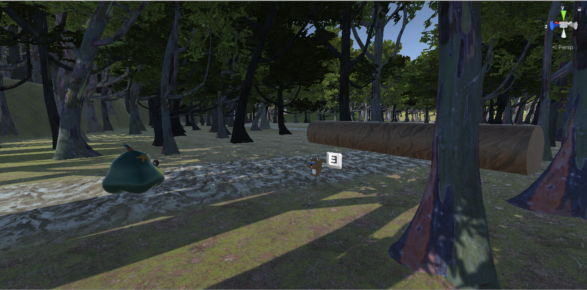
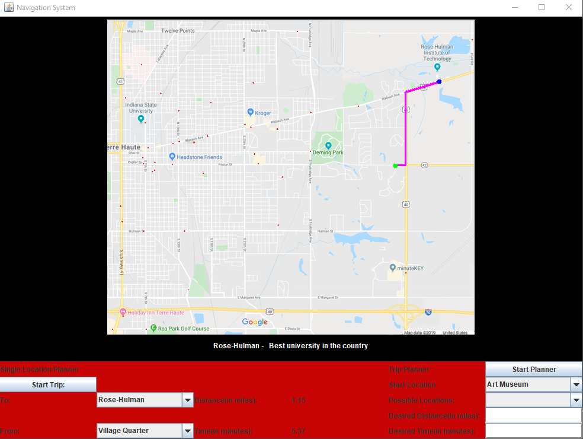

Portfolio
-
Personal Portfolio Page
This is a project I accomplished for CSSE280 and it is what you are viewing right now. It is a web-page to show my achievements, projects, resume, and a little bit of information about myself.
-
Unity 3D RPG Game
A video game made in Unity 3D and programmed with C#. It is an RPG style game that has a fully functional Quest System, Fighting System, and much more.
-
GPS Navigation System
A small GPS navigation system that could show the shortest path distances on a map (of the local Terre Haute area). This was made using data structures and the A* shortest path algorithm.